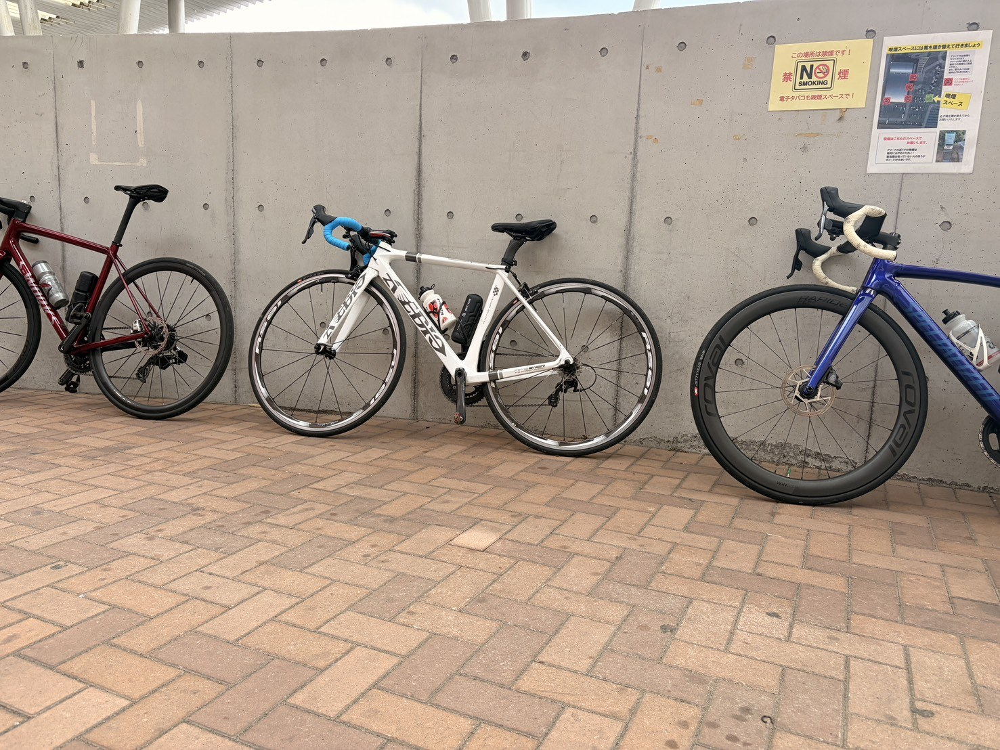
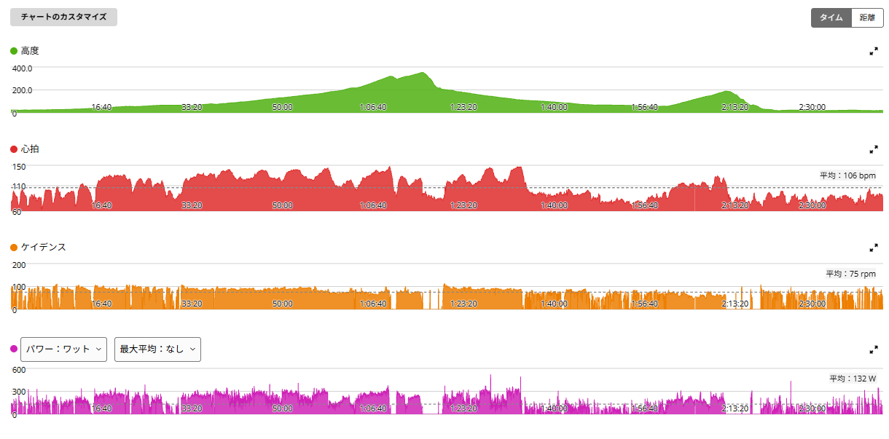

久しぶりの3人ライド。近沢峠まで行ってきた
今日は近沢峠まで走ってきた。人数は私を含めて3人。最近は一人で走ることが多かったので、久しぶりのグループライドである。

63.22km・NP192W・TSS130.2
- 全体63.22km / 2時間40分34秒（移動2時間37分44秒・経過3時間23分58秒）/ 獲得525m / 平均気温17.9℃
- 負荷平均132W / NP192W / IF0.699 / TSS130.2
- 心拍・回転平均106bpm / 最大148bpm / 平均75rpm
- 効果有酸素TE2.8 / 無酸素TE0.0 / 運動負荷68
パワーはゾーン1が1時間26分で全体の半分以上。心拍はゾーン4以上に一度も入っていない。長時間のベース走に、登りで少し刺激が入ったような内容である。
膝がまだ怖いので、今日は「みんなで長めに」
膝の違和感は少しずつ落ち着いてきていて、前日の唐沢でも痛みなく走れていた。とはいえ、まだフルパワーで踏むのは少し怖い。
なので今日は、無理に高強度を狙うというより、みんなで走る、長めに乗る、膝の状態を確認する。それくらいの気持ちで出発した。
近沢峠へ向かう登りは230W。膝も問題なし
- 近沢峠へ向かう登り20分48秒 / 平均230W / 心拍平均131bpm・最大145bpm / 88rpm
20分以上の登りだが、最近高強度を控えている中ではちょうどいい強度だった。全開ではないけれど、ちゃんと登っている。膝にも問題なく、余裕を残して走れた。
近沢峠本体は、ラップを切り忘れた
そして肝心の近沢峠。……ラップを切るのを忘れた。なので、近沢峠そのもののタイムや平均パワーはない。こういう日に限って忘れる。
グラフを見ると、1時間前後から標高を大きく上げている区間があるので、登っていること自体は分かる。まあ、今日は記録狙いではなかったので、これはこれでいいことにする。

帰りの下りは、前の背中についていくのが気持ちよかった
- 帰りの下り14分50秒 / 平均40.3km/h / 平均197W
今日いちばん楽しかったのは帰りの下りである。下りなので速度が出るのは当然だが、前の人の後ろにつくとスリップストリームが効いて、体感ではかなり楽になる。速度は出ているのに、脚はそこまで使っていない。これはグループライドならではである。
3人で走ると、楽しさの種類が変わる
一人で走ると、どうしても「今日は何ワット出た」「この登りは何分だった」みたいなことを考えがちだ。でもグループライドだと、前を走ったり、後ろについたり、話しながら走ったり。同じ自転車でも、楽しさの種類が少し変わる。
今日の写真には3台の自転車が並んでいる。こういう写真を見ると、どこを走ったか、何ワットだったかだけじゃなく、誰と走ったかもライドの大事な記録なんだなと思う。
膝は今日も問題なし
膝前面の違和感は、今日も走っている間は問題なかった。前日の唐沢に続いて痛みなしなので、これはかなり安心材料である。
ただし、まだ全開で踏むのは少し怖いので、しばらくは315W×5分×5本のような高強度は控えるつもりだ。痛みなく乗れること、長時間走っても悪化しないこと、翌日も問題ないこと。この3つを確認しながら戻していく。
今日やってみて思ったこと
最近は膝のこともあって、どうしても「痛くないか」「高強度をいつ再開できるか」ということばかり考えていた。でも今日は、そんなことを忘れる時間が多かった。
3人で走って、登って、下って、前の人の後ろについて楽にスピードが出て、「ああ、やっぱりグループライドって楽しいな」と思えた。トレーニングだけでは続かない部分を、こういう日が補ってくれる。
次に見るポイント
- 翌日の膝膝が翌日も問題ないか
- 長時間長時間走を続けても違和感が出ないか
- 戻し方高強度を焦らず、まず中強度まで戻す
- グループライド定期的に入れて楽しむ
- 近沢峠次回はちゃんとラップを切る
最後の項目だけは、忘れないようにしたい。